Competition
8th Place — Chicago Quantitative Association Investment Challenge 2025-2026
Earned an eighth-place finish in a quantitative investment competition focused on portfolio analysis and investment strategy.
I’m an undergraduate at UNC Charlotte studying Computer Science, Mathematics, and Finance. My work sits at the intersection of banking, quantitative analysis, applied mathematics, and machine learning. I interned in Commercial Banking at Wells Fargo in Summer 2027, gaining experience in commercial credit, financial analysis, and client-focused banking. I’m also an Applied Math Research Assistant studying numerical optimization for inverse problems and an undergraduate researcher using machine learning and large language models to detect financial fraud on social media. In addition, I support founders as a Strategy Analyst Intern with CO-LAB. Previously, I managed credit risk and built automation and machine-learning tools at Continental, and I was named Analyst of the Year in UNC Charlotte’s Student Managed Investment Fund, where I conducted equity research, valuation, and portfolio risk analysis for a $700,000 equity portfolio. I’m especially interested in fintech, financial modeling, quantitative finance, and the practical use of technology to solve financial problems.
Competition
Earned an eighth-place finish in a quantitative investment competition focused on portfolio analysis and investment strategy.
Scholarship
UNC Charlotte · May 2026
Scholarship
UNC Charlotte Interfraternity Council · April 2026
Leadership
UNC Charlotte Niner Finances · February 2025
Recognized at the Third Annual Financial Literacy Symposium for leadership and contributions toward advancing financial literacy.
Investment Management
UNC Charlotte Student Managed Investment Fund · 2026
Recognized for outstanding equity research, valuation, and risk analysis while helping manage the fund’s $700,000 equity portfolio.
Academic Honors
University of North Carolina at Charlotte
Awarded for earning a semester GPA of 3.8 or higher.
Summer 2027
Gained experience in commercial credit, financial analysis, and client-focused banking.
January 2026 - Present
Researching numerical optimization methods for inverse problems through iterative algorithms, mathematical modeling, and computational experiments.
January 2026 - Present
Studying financial fraud and illicit activity on social media using large-scale data, feature engineering, machine learning, and LLM-based classification models.
January 2025 - Present
Building operational tools and resources for founders, including an automated event-space booking workflow, while supporting market research, pitch preparation, and entrepreneurial programming.
August 2025 - May 2026
Selected for an eight-student analyst team managing a $700,000 equity portfolio. Conducted equity research, DCF and relative valuation, and risk analysis, earning SMIF Analyst of the Year.
January 2025 - January 2026
Managed credit exposure for a $100M+ receivables portfolio, developed machine-learning models for customer segmentation and anomaly detection, and automated more than 1,000 financial-request emails with Python and VBA.
September 2023 - February 2025
Designed workshops on fintech, investing, and personal finance; presented to audiences of up to 90 people; and received an award for leadership and dedication to financial literacy.
Undergraduate research spanning applied mathematics, computational optimization, data science, and the detection of coordinated inauthentic behavior online.
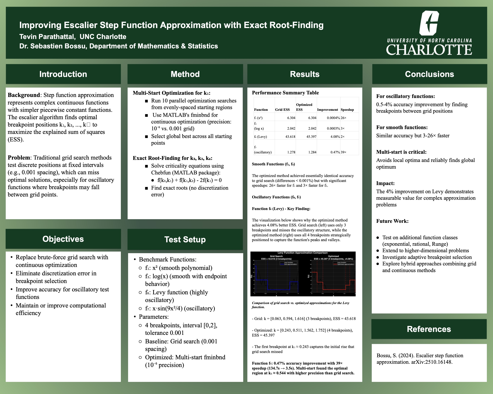
Advisor: Dr. Sebastien Bossu · UNC Charlotte Department of Mathematics and Statistics
Replaced brute-force grid search with continuous optimization and exact root-finding, improving accuracy for oscillatory functions while achieving substantial computational speedups.
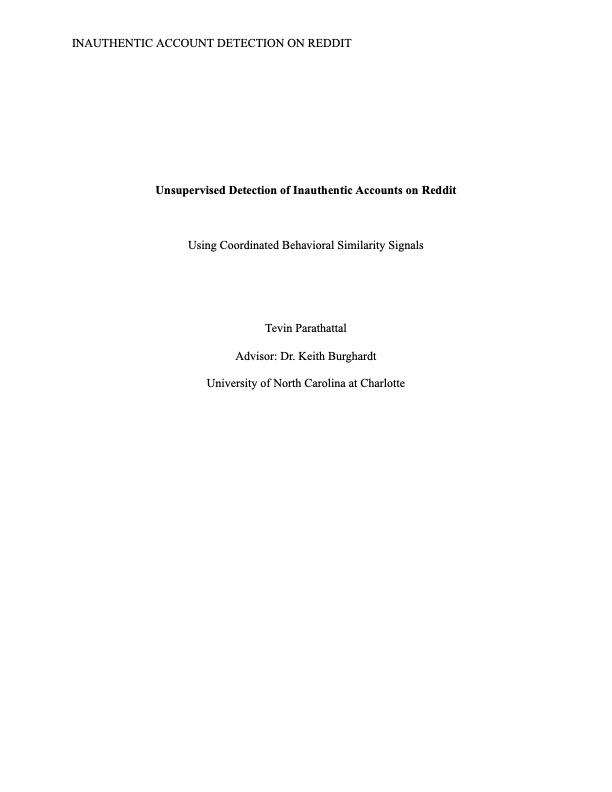
Advisor: Dr. Keith Burghardt · UNC Charlotte School of Data Science
Developed a Reddit-specific detection pipeline using seven behavioral similarity signals and LLM-assisted verification to study coordinated activity across general and finance-focused communities.
Projects and initiatives related to the Student Managed Investment Fund.
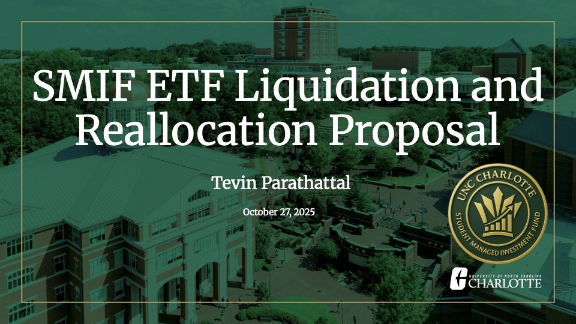
A proposal for liquidating selected ETFs and reallocating portfolio capital.
An analysis of Mercado Libre and its financial services ecosystem.
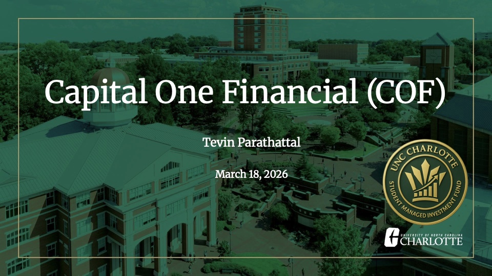
An analysis of Capital One Financial and its position in the financial sector.
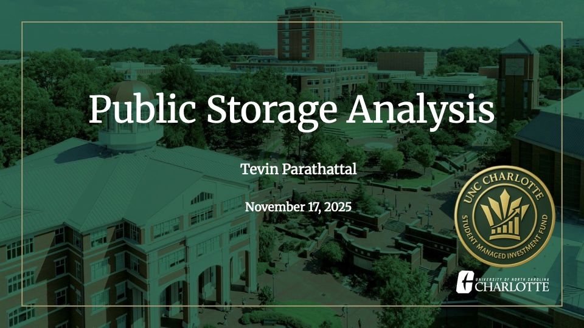
An analysis of Public Storage within the real estate investment trust sector.
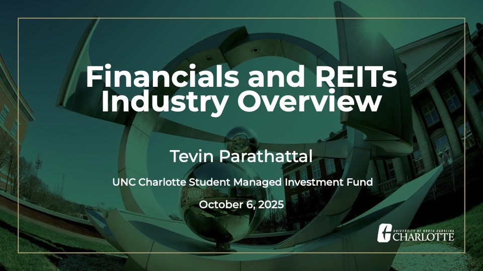
An overview of the financial services and real estate investment trust sectors.
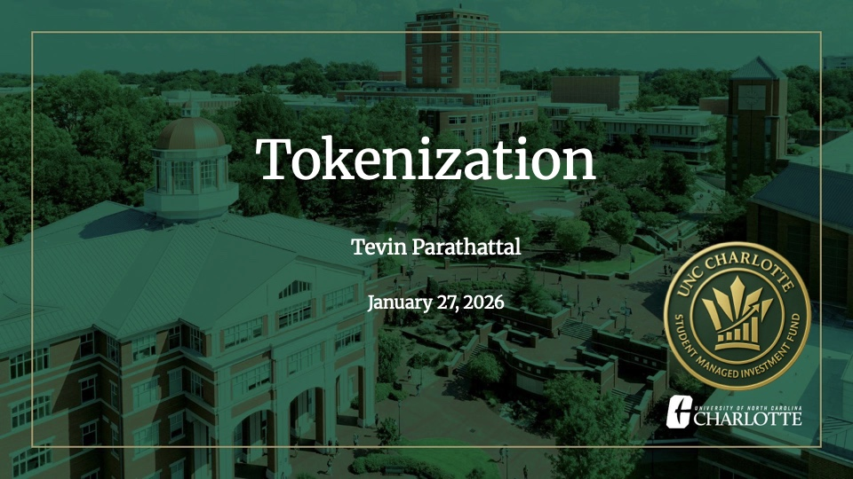
An overview of tokenization and its applications in modern financial markets.
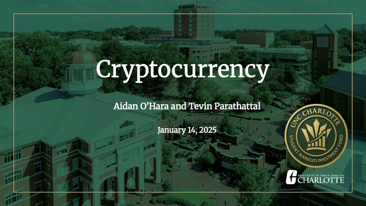
An introduction to cryptocurrency as an emerging investment topic.

Presented and explained the concepts of Capital Asset Pricing Model (CAPM) and Weighted Average Cost of Capital (WACC).
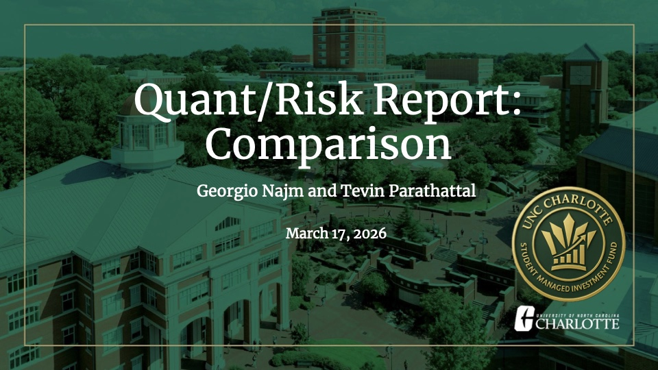
SMIF quantitative risk and portfolio analysis presentation.
SMIF quantitative risk and portfolio analysis presentation.
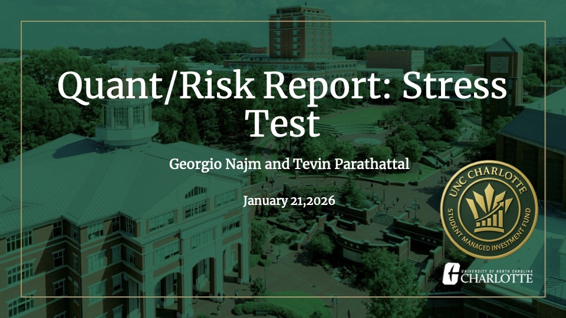
SMIF quantitative risk and portfolio analysis presentation.
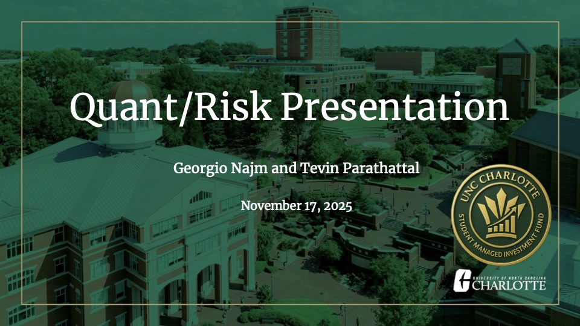
SMIF quantitative risk and portfolio analysis presentation.
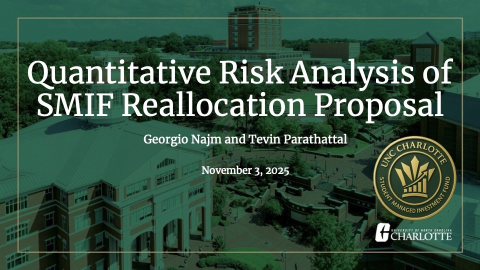
SMIF quantitative risk and portfolio analysis presentation.
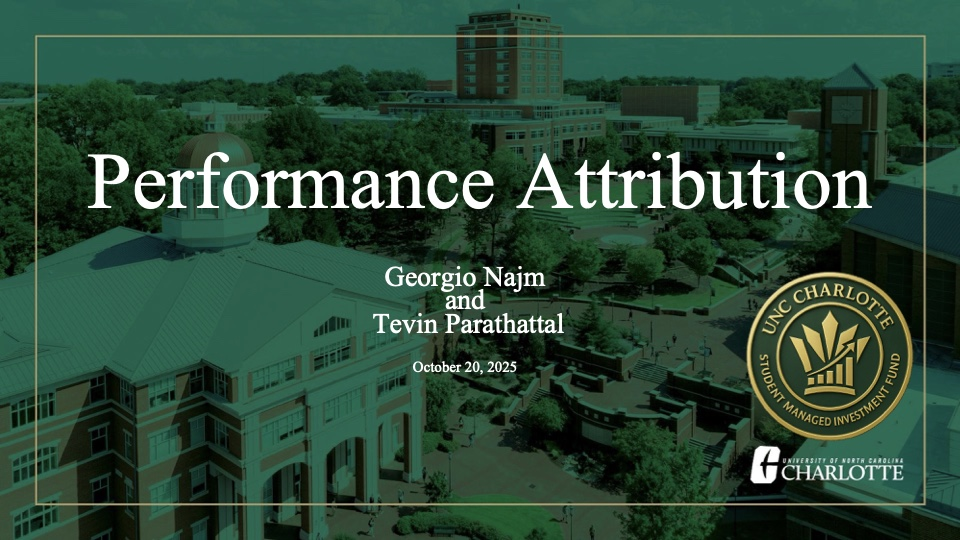
SMIF quantitative risk and portfolio analysis presentation.
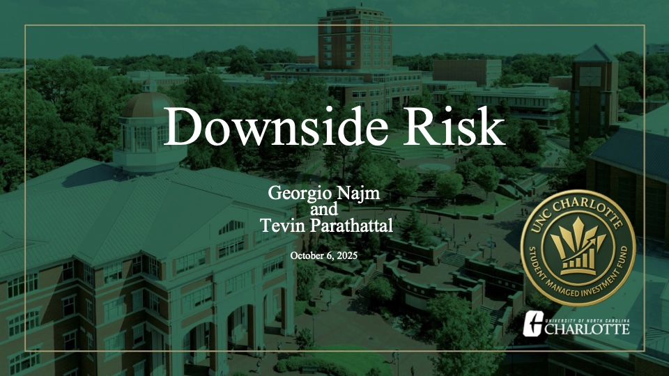
SMIF quantitative risk and portfolio analysis presentation.
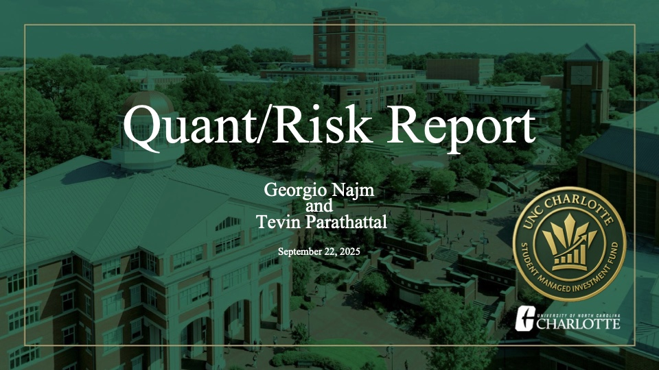
SMIF quantitative risk and portfolio analysis presentation.
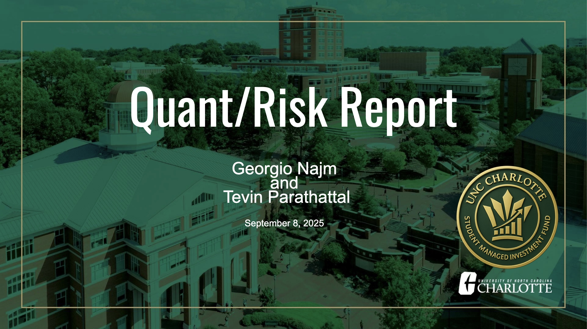
Describes the quantitative risk analysis conducted for the SMIF portfolio on September 8, 2025.
Educational and outreach projects developed during my time with Niner Finances.
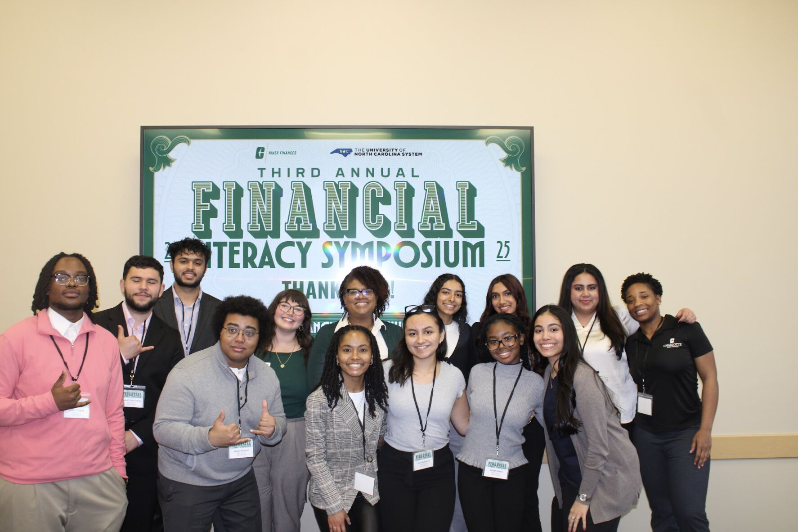
I created and reviewed educational canvas modules for Niner Finances. Check some of them by clicking the image above!
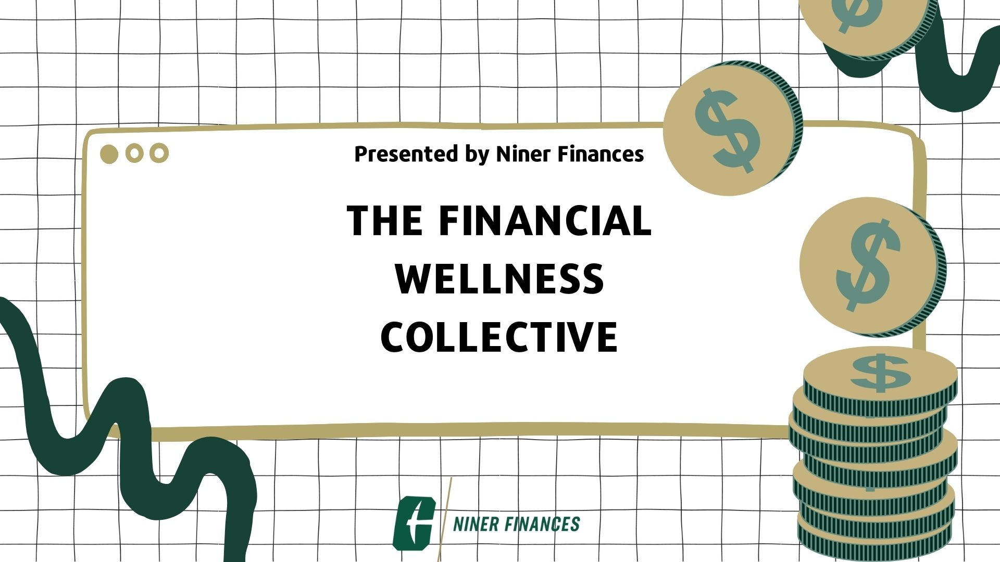
Click above to see the website.
Academic projects completed during my studies at UNC Charlotte.
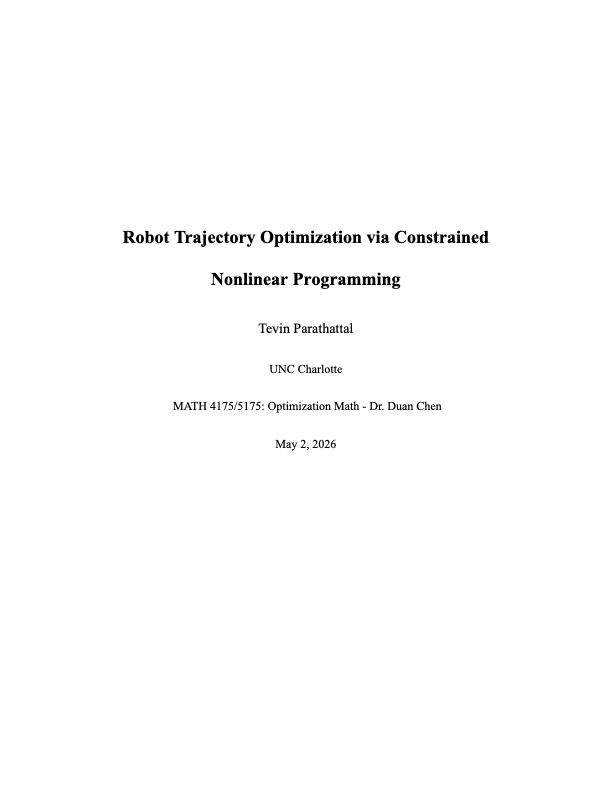
MATH 4175/5175 final project applying constrained nonlinear programming and SLSQP to optimize a robot’s path around obstacles while evaluating trajectory smoothness, discretization stability, and KKT optimality conditions.
Academic project analyzing factors affecting loan approval. Click above to see the pdf.
Academic research project analyzing factors affecting student performance. Click above to see the pdf.
Data analysis project examining customer retention patterns in banking. Click above to see the pdf.
Machine learning project using regression analysis to predict real estate values. Click above to see the pdf.
Advanced analytics project on credit card customer behavior patterns. Click above to see the pdf.
Analysis of startup data from Kaggle using machine learning clustering techniques. Click above to see the pdf.

Development of a RESTful API for a restaurant review application. Click above to see the GitHub repository.
I'd love to hear from you!